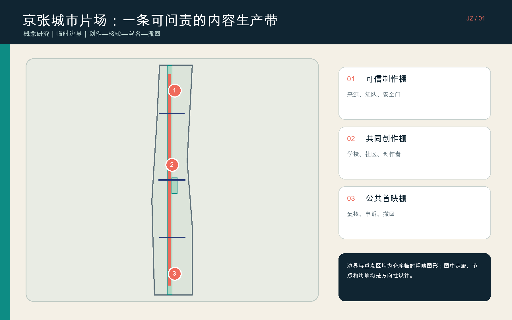
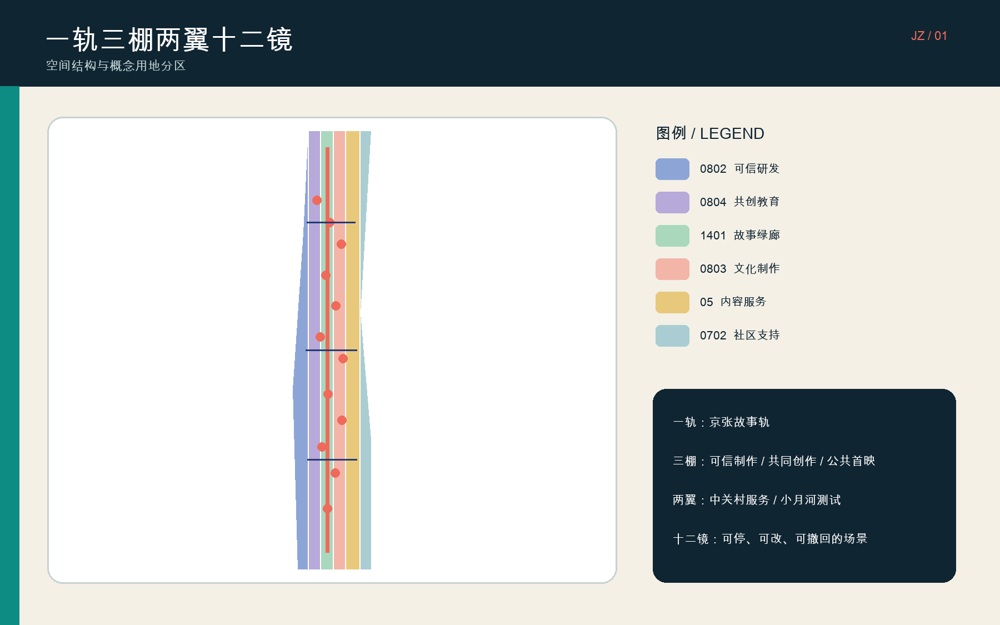
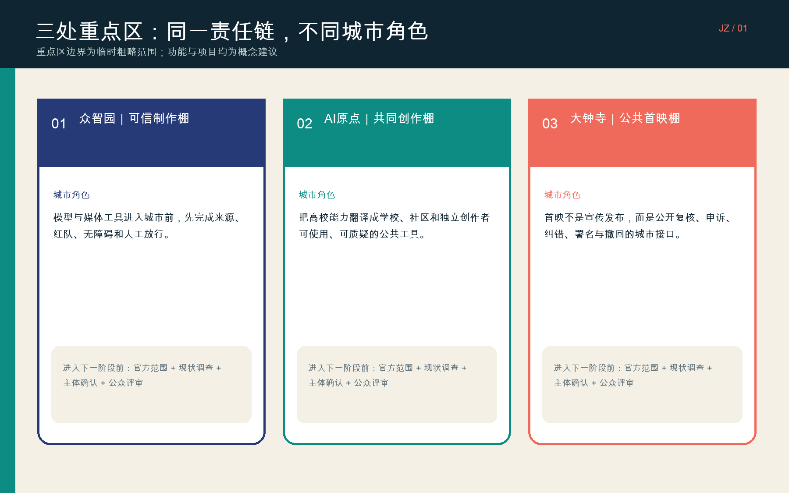
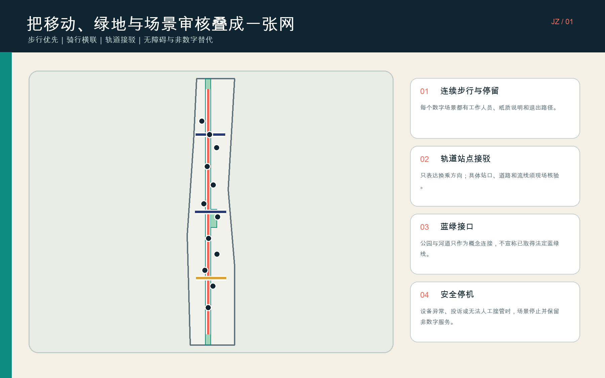
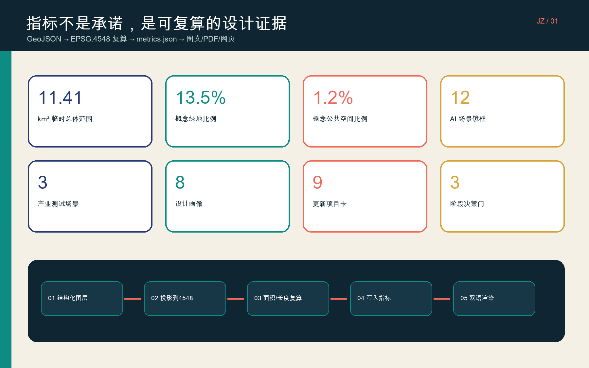

总览地图
三层范围
统筹研究 43.6 km²（公告约值）→ 总体设计约 11.4 km²（临时图形复算）→ 三处重点区 368.4 ha（公告约值，图形临时）。
CONCEPT ONLYPROVISIONAL用地分区

重点区域

交通慢行与蓝绿公共空间

建筑与更新项目
九类空间原型
可信测试、内容凭证、权利诊所、共同创作、青年影像、公共说明、无障碍媒介、公共首映、创作者孵化。建筑基底只表示空间供给类型；拆改留须另行调查。
九张项目卡，三道决策门
先做规则与低成本原型；再做空间适配与片区联动；最后才讨论长期运营和国际协作。每一阶段都需官方资料、主体、预算、公众与专业复核。
AI 场景
来源压力测试｜无障碍基准｜媒体安全红队｜遗产导览｜社区记忆｜青年素养｜人才服务｜公共首映｜权利门诊｜公共说明｜小店故事｜低速设备测试
每个场景：明确人类负责人、数据边界、非数字替代、停止条件、申诉与撤回。
核心指标

任务覆盖
覆盖公告三层范围、总体生态、未来城市、城市更新、重点区详细设计，以及智能体任务书的命名、案例、场景、公共节点、文化叙事和长期运营。
23 项任务矩阵、6 项标准矩阵、15 项设计深度矩阵均由结构化文件记录；图面不是唯一证据。
自检状态
正式提交前由仓库脚本复核空间拓扑、指标一致性、双语材料、图面安全和专业证据链。
来源
主要依据：北京市规划自然资源委项目公告、仓库场地包与智能体任务书；北京电影学院、C2PA、MIT Media Lab、MIT Open Documentary Lab、Ars Electronica Futurelab、ZKM、Mila、S+T+ARTS仅作背景机制参考。
假设
本页是概念方案的离线展示层。总体边界、三处重点区均为仓库临时粗略图形；不得据此认定法定红线、实施项目、合作关系或政府承诺。
未开展现场踏勘、居民访谈、无障碍测试或合作方确认；法定控制、产权、市政、建筑现状和遗产控制资料均待补。